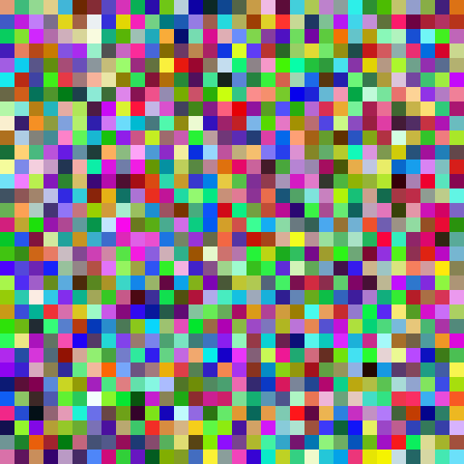

MOTIVATION
Aus Interesse an Gegenwartskunst habe ich 2012 die Retrospektive „Panorama“ in der Neuen und Alten Nationalgalerie der Staatlichen Museen zu Berlin sowie im Jahr 2013 die Sonderausstellung „Streifen und Glas“ im Albertinum der Staatlichen Kunstsammlungen Dresden des Künstlers Gerhard Richter besucht. In Auseinandersetzung mit dem Werk „4096 Farben“ und der Werkgruppe „Strips“ erprobte ich die Möglichkeiten einer eigenen Umsetzung dieser Kunstwerke unter Zuhilfenahme des Programmes „Processing“. Einige Ergebnisse sind in dieser Arbeitsprobe zu sehen. Der Fokus bei diesem Projekt lag auf der Gestaltung und Programmierung einer modernen Website.
VARIATIONEN I
